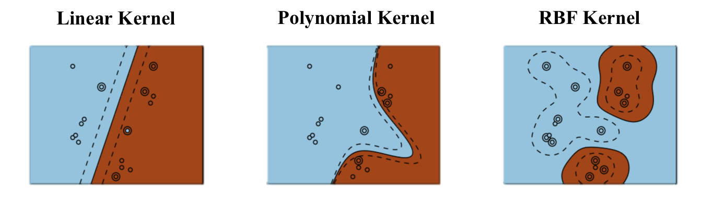

Learning theory
Error measurements
The training error is the error made on the training set. It is easy to measure for classification as the number of misclassified examples divided by the total number of examples.
\[\epsilon_\mathcal{D} = \dfrac{\text{Number of misclassifications}}{\text{Total number of examples}}\]
The training error is totally irrelevant on usage: reading the training set has a training error of 0%. What matters is the generalization error, which is the error that will be made on new examples (not used during learning). It is much harder to measure (potentially infinite number of new examples, what is the correct answer?). The generalization error is often approximated by the empirical error: one keeps a number of training examples out of the learning phase and one tests the performance on them.
Classification errors can also depend on the class:
- False Positive errors (FP, false alarm, type I) is when the classifier predicts a positive class for a negative example.
- False Negative errors (FN, miss, type II) is when the classifier predicts a negative class for a positive example.
- True Positive (TP) and True Negative (TN) are correctly classified examples.
Is it better to fail to detect a cancer (FN) or to incorrectly predict one (FP)?
Some other metrics:
- Accuracy (1 - error)
\[ \text{acc} = \frac{\text{TP} + \text{TN}}{\text{TP} + \text{FP} + \text{TN} + \text{FN}} \]
- Recall (hit rate, sensitivity)
\[ R = \frac{\text{TP}}{\text{TP} + \text{FN}} \]
- Precision (specificity)
\[ P = \frac{\text{TP}}{\text{TP} + \text{FP}} \]
- F1 score = harmonic mean of precision and recall
\[ \text{F1} = \frac{2\, P \, R}{P + R} \]
For multiclass classification problems, the confusion matrix tells how many examples are correctly classified and where confusion happens. One axis is the predicted class, the other is the target class. Each element of the matrix tells how many examples are classified or misclassified. The matrix should be as diagonal as possible.

Using scikit-learn:
from sklearn.metrics import confusion_matrix
m = confusion_matrix(t, y)Cross-validation


In classification too, cross-validation has to be used to prevent overfitting. The classifier is trained on the training set and tested on the test set. Optionally, a third validation set can be used to track overfitting during training.

Beware: the test data must come from the same distribution as the training data, otherwise it makes no sense.
Vapnik-Chervonenkis dimension
How many data examples can be correctly classified by a linear model in \(\Re^d\)? In \(\Re^2\), all dichotomies of three non-aligned examples can be correctly classified by a linear model (\(y = w_1 \, x_1 + w_2 \, x_2 + b\)).

However, there exists sets of four examples in \(\Re^2\) which can NOT be correctly classified by a linear model, i.e. they are not linearly separable.

The XOR function in \(\Re^2\) is for example not linearly separable, i.e. the Perceptron algorithm can not converge.
The probability that a set of 3 (non-aligned) points in \(\Re^2\) is linearly separable is 1, but the probability that a set of four points is linearly separable is smaller than 1 (but not zero). When a class of hypotheses \(\mathcal{H}\) can correctly classify all points of a training set \(\mathcal{D}\), we say that \(\mathcal{H}\) shatters \(\mathcal{D}\).
The Vapnik-Chervonenkis dimension \(\text{VC}_\text{dim} (\mathcal{H})\) of an hypothesis class \(\mathcal{H}\) is defined as the maximal number of training examples that \(\mathcal{H}\) can shatter. We saw that in \(\Re^2\), this dimension is 3:
\[\text{VC}_\text{dim} (\text{Linear}(\Re^2) ) = 3\]
This can be generalized to linear classifiers in \(\Re^d\):
\[\text{VC}_\text{dim} (\text{Linear}(\Re^d) ) = d+1\]
This corresponds to the number of free parameters of the linear classifier: \(d\) parameters for the weight vector, 1 for the bias. Given any set of \((d+1)\) examples in \(\Re^d\), there exists a linear classifier able to classify them perfectly. For other types of (non-linear) hypotheses, the VC dimension is generally proportional to the number of free parameters, but regularization reduces the VC dimension of the classifier.
The generalization error \(\epsilon(h)\) of an hypothesis \(h\) taken from a class \(\mathcal{H}\) of finite VC dimension and trained on \(N\) samples of \(\mathcal{S}\) is bounded by the sum of the training error \(\hat{\epsilon}_{\mathcal{S}}(h)\) and the VC complexity term:
\[ \epsilon(h) \leq \hat{\epsilon}_{\mathcal{S}}(h) + \sqrt{\frac{\text{VC}_\text{dim} (\mathcal{H}) \cdot (1 + \log(\frac{2\cdot N}{\text{VC}_\text{dim} (\mathcal{H})})) - \log(\frac{\delta}{4})}{N}} \]
with probability \(1-\delta\), if \(\text{VC}_\text{dim} (\mathcal{H}) << N\).
Vapnik, Vladimir (2000). The nature of statistical learning theory. Springer.
Structural risk minimization

The generalization error increases with the VC dimension, while the training error decreases. Structural risk minimization is an alternative method to cross-validation. The VC dimensions of various classes of hypothesis are already known (~ number of free parameters). The VC bounds tells how many training samples are needed by a given hypothesis class in order to obtain a satisfying generalization error.
\[\epsilon(h) \leq \hat{\epsilon}_{\mathcal{S}(h)} + \sqrt{\frac{\text{VC}_\text{dim} (\mathcal{H}) \cdot (1 + \log(\frac{2\cdot N}{\text{VC}_\text{dim} (\mathcal{H})})) - \log(\frac{\delta}{4})}{N}}\]
The more complex the model, the more training data you will need to get a good generalization error!
Rule of thumb:
\[ \epsilon(h) \approx \frac{\text{VC}_\text{dim} (\mathcal{H})}{N} \]
A learning algorithm should only try to minimize the training error, as the VC complexity term only depends on the model. This term is only an upper bound: most of the time, the real bound is usually 100 times smaller.
The VC dimension of linear classifiers in \(\Re^d\) is:
\[\text{VC}_\text{dim} (\text{Linear}(\Re^d) ) = d+1\]
Given any set of \((d+1)\) examples in \(\Re^d\), there exists a linear classifier able to classify them perfectly. For \(N >> d\) the probability of having training errors becomes huge (the data is generally not linearly separable).
If we project the input data onto a space with sufficiently high dimensions, it becomes then possible to find a linear classifier on this projection space that is able to classify the data!
However, if the space has too many dimensions, the VC dimension will increase and the generalization error will increase. This is the basic principle of all non-linear ML methods: multi-layer perceptron, radial-basis-function networks, support-vector machines…
Feature space
A complex pattern-classification problem, cast in a high dimensional space non-linearly, is more likely to be linearly separable than in a low-dimensional space, provided that the space is not densely populated.

The highly dimensional space where the input data is projected is called the feature space When the number of dimensions of the feature space increases, the training error decreases (the pattern is more likely linearly separable) but the generalization error increases (the VC dimension increases).
Polynomial features
For the polynomial regression of order \(p\):
\[y = f_{\mathbf{w}, b}(x) = w_1 \, x + w_2 \, x^2 + \ldots + w_p \, x^p + b\]
the vector \(\mathbf{x} = \begin{bmatrix} x \\ x^2 \\ \ldots \\ x^p \end{bmatrix}\) defines a feature space for the input \(x\). The elements of the feature space are called polynomial features. We can define polynomial features of more than one variable, e.g. \(x^2 \, y\), \(x^3 \, y^4\), etc. We then apply multiple linear regression (MLR) on the polynomial feature space to find the parameters:
\[\Delta \mathbf{w} = \eta \, (t - y) \, \mathbf{x}\]
Radial-basis function networks

Radial-basis function (RBF) networks samples a subset of \(K\) training examples and form the feature space using a gaussian kernel:
\[\phi(\mathbf{x}) = \begin{bmatrix} \varphi(\mathbf{x} - \mathbf{x}_1) \\ \varphi(\mathbf{x} - \mathbf{x}_2) \\ \ldots \\ \varphi(\mathbf{x} - \mathbf{x}_K) \end{bmatrix}\]
with \(\varphi(\mathbf{x} - \mathbf{x}_i) = \exp - \beta \, ||\mathbf{x} - \mathbf{x}_i||^2\) decreasing with the distance between the vectors.


By applying a linear classification algorithm on the RBF feature space:
\[\mathbf{y} = f(W \times \phi(\mathbf{x}) + \mathbf{b})\]
we obtain a smooth non-linear partition of the input space. The width of the gaussian kernel allows distance-based generalization.

Kernel perceptron
What happens during online Perceptron learning?
for \(M\) epochs:
for each sample \((\mathbf{x}_i, t_i)\):
\(y_i = \text{sign}( \langle \mathbf{w} \cdot \mathbf{x}_i \rangle + b)\)
\(\Delta \mathbf{w} = \eta \, (t_i - y_i) \, \mathbf{x}_i\)
\(\Delta b = \eta \, (t_i - y_i)\)
If an example \(\mathbf{x}_i\) is correctly classified (\(y_i = t_i\)), the weight vector does not change.
\[\mathbf{w} \leftarrow \mathbf{w}\]
If an example \(\mathbf{x}_i\) is miscorrectly classified (\(y_i \neq t_i\)), the weight vector is increased from \(t_i \, \mathbf{x}_i\).
\[\mathbf{w} \leftarrow \mathbf{w} + 2 \, \eta \, t_i \, \mathbf{x}_i\]
If you initialize the weight vector to 0, its final value will therefore be a linear combination of the input samples:
\[\mathbf{w} = \sum_{i=1}^N \alpha_i \, t_i \, \mathbf{x}_i\]
The coefficients \(\alpha_i\) represent the embedding strength of each example, i.e. how often they were misclassified.
With \(\mathbf{w} = \sum_{i=1}^N \alpha_i \, t_i \, \mathbf{x}_i\), the prediction for an input \(\mathbf{x}\) only depends on the training samples and their \(\alpha_i\) value:
\[y = \text{sign}( \sum_{i=1}^N \alpha_i \, t_i \, \langle \mathbf{x}_i \cdot \mathbf{x} \rangle)\]
To make a prediction \(y\), we need the dot product between the input \(\mathbf{x}\) and all training examples \(\mathbf{x}_i\). We ignore the bias here, but it can be added back.
for \(M\) epochs:
for each sample \((\mathbf{x}_i, t_i)\):
\(y_i = \text{sign}( \sum_{j=1}^N \alpha_j \, t_j \, \langle \mathbf{x}_j \cdot \mathbf{x}_i \rangle)\)
if \(y_i \neq t_i\) :
- \(\alpha_i \leftarrow \alpha_i + 1\)
This dual form of the Perceptron algorithm is strictly equivalent to its primal form. It needs one parameter \(\alpha_i\) per training example instead of a weight vector (\(N >> d\)), but relies on dot products between vectors.
Why is it interesting to have an algorithm relying on dot products? You can project the inputs \(\mathbf{x}\) to a feature space \(\phi(\mathbf{x})\) and apply the same algorithm:
\[y = \text{sign}( \sum_{i=1}^N \alpha_i \, t_i \, \langle \phi(\mathbf{x}_i) \cdot \phi(\mathbf{x}) \rangle)\]
But you do not need to compute the dot product in the feature space, all you need to know is its result.
\[K(\mathbf{x}_i, \mathbf{x}) = \langle \phi(\mathbf{x}_i) \cdot \phi(\mathbf{x}) \rangle\]
Kernel trick: A kernel \(K(\mathbf{x}, \mathbf{z})\) allows to compute the dot product between the feature space representation of two vectors without ever computing these representations!
Let’s consider the quadratic kernel in \(\Re^3\):
\[\begin{eqnarray*} \forall (\mathbf{x}, \mathbf{z}) \in \Re^3 \times \Re^3 && \\ && \\ K(\mathbf{x}, \mathbf{z}) &=& ( \langle \mathbf{x} \cdot \mathbf{z} \rangle)^2 \\ &=& (\sum_{i=1}^3 x_i \cdot z_i) \cdot (\sum_{j=1}^3 x_j \cdot z_j) \\ &=& \sum_{i=1}^3 \sum_{j=1}^3 (x_i \cdot x_j) \cdot ( z_i \cdot z_j) \\ &=& \langle \phi(\mathbf{x}) \cdot \phi(\mathbf{z}) \rangle \end{eqnarray*}\]
with:
\[ \phi(\mathbf{x}) = \begin{bmatrix} x_1 \cdot x_1 \\ x_1 \cdot x_2 \\ x_1 \cdot x_3 \\ x_2 \cdot x_1 \\ x_2 \cdot x_2 \\ x_2 \cdot x_3 \\ x_3 \cdot x_1 \\ x_3 \cdot x_2 \\ x_3 \cdot x_3 \end{bmatrix} \]
The quadratic kernel implicitely transforms an input space with three dimensions into a feature space of 9 dimensions.
More generally, the polynomial kernel in \(\Re^d\) of degree \(p\):
\[ \begin{align*} \forall (\mathbf{x}, \mathbf{z}) \in \Re^d \times \Re^d \qquad K(\mathbf{x}, \mathbf{z}) &= ( \langle \mathbf{x} \cdot \mathbf{z} \rangle)^p \\ &= \langle \phi(\mathbf{x}) \cdot \phi(\mathbf{z}) \rangle \end{align*} \]
transforms the input from a space with \(d\) dimensions into a feature space of \(d^p\) dimensions.
While the inner product in the feature space would require \(O(d^p)\) operations, the calculation of the kernel directly in the input space only requires \(O(d)\) operations. This is called the kernel trick: when a linear algorithm only relies on the dot product between input vectors, it can be safely projected into a higher dimensional feature space through a kernel function, without increasing too much its computational complexity, and without ever computing the values in the feature space.
The kernel perceptron is the dual form of the Perceptron algorithm using a kernel:
for \(M\) epochs:
for each sample \((\mathbf{x}_i, t_i)\):
\(y_i = \text{sign}( \sum_{j=1}^N \alpha_j \, t_j \, K(\mathbf{x}_j, \mathbf{x}_i))\)
if \(y_i \neq t_i\) :
- \(\alpha_i \leftarrow \alpha_i + 1\)
Depending on the kernel, the implicit dimensionality of the feature space can even be infinite! Some kernels:
- Linear kernel: dimension of the feature space = \(d\).
\[ K(\mathbf{x},\mathbf{z}) = \langle \mathbf{x} \cdot \mathbf{z} \rangle \]
- Polynomial kernel: dimension of the feature space = \(d^p\).
\[ K(\mathbf{x},\mathbf{z}) = (\langle \mathbf{x} \cdot \mathbf{z} \rangle)^p \]
- Gaussian kernel (or RBF kernel): dimension of the feature space= \(\infty\).
\[ K(\mathbf{x},\mathbf{z}) = \exp(-\frac{\| \mathbf{x} - \mathbf{z} \|^2}{2\sigma^2}) \]
- Hyperbolic tangent kernel: dimension of the feature space = \(\infty\)
\[ k(\mathbf{x},\mathbf{z})=\tanh(\langle \kappa \mathbf{x} \cdot \mathbf{z} \rangle +c) \]
In practice, the choice of the kernel family depends more on the nature of data (text, image…) and its distribution than on the complexity of the learning problem. RBF kernels tend to “group” positive examples together. Polynomial kernels are more like “distorted” hyperplanes. Kernels have parameters (\(p\), \(\sigma\)…) which have to found using cross-validation.

Support vector machines
Support vector machines (SVM) extend the idea of a kernel perceptron using a different linear learning algorithm, the maximum margin classifier. Using Lagrange optimization and regularization, the maximal margin classifer tries to maximize the “safety zone” (geometric margin) between the classifier and the training examples. It also tries to reduce the number of non-zero \(\alpha_i\) coefficients to keep the complexity of the classifier bounded, thereby improving the generalization:
\[ \mathbf{y} = \text{sign}(\sum_{i=1}^{N_{SV}} \alpha_i \, t_i \, K(\mathbf{x}_i, \mathbf{x}) + b) \]
Coupled with a good kernel, a SVM can efficiently solve non-linear classification problems without overfitting. SVMs were the weapon of choice before the deep learning era, which deals better with huge datasets.